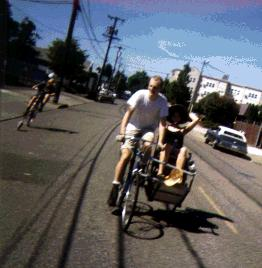
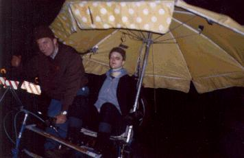
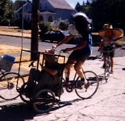
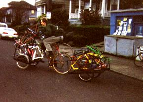
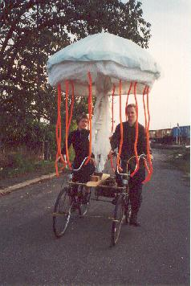
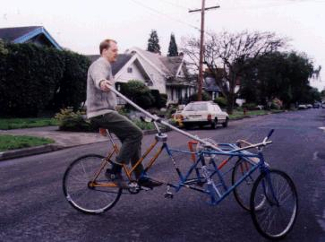
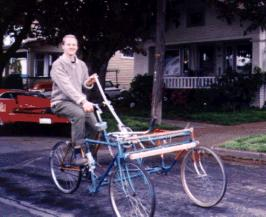
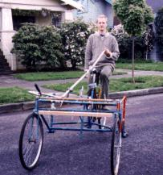
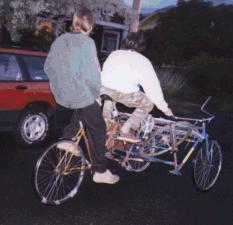

{kind=link}
{kind=link}
{kind=link}
{kind=link}
{kind=link}
{kind=link}

Some useful, relatively down-to-earth vehicles! Believe it or don't! The ideas for some of these rides came from The Fantastic Bicycles Book by Steven Lindholm.
There's something very comforting about hauling a lot of shit around. It's nice to know that you're prepared for sudden hailstorms, famine, breakdowns, and boredom. With these large vehicles, we are also working towards our goal of building self-sustaining, mobile arks that can withstand several extremes of terrain and climate. While we have some ways to go, these crafts are already very homey, supporting a small but permanent ecology of spiders both when parked and in transit. When docked in the driveway under a tarp, they house and are guarded by the local kittys.
(delta trike technical information.)

The Hack is a pretty normal sidecar bike made out of two frames, most of another, and a little of a fourth, with some random bike tubing and chainstays connecting it all together. It's made for hauling honored passengers around with style and dignity, and does so pretty damn well, if we say so ourselves.
Because of the Hack's asymmetry, pedaling it can be exciting for the drover. When there isn't any weight in the sidecar, this vehicle has a great right turn and a terrible left turn. Standard procedure when without a passenger is to put something heavy in the sidecar and jettison it later.
Putting the sidecar on the left, by the way, was a stupid move here where we ride on the right. Not only is it impolite to subject the passenger to passing traffic, but highly crowned roads are more difficult to navigate without support from the sidecar, since the trike leans with the road. Oh well.
The device is slowly growing umbrellas as they are found and clamped onto the frame. These impair visibility to the rear, and can make things exciting during high winds, but the extra weight lends some stability, and they make raincoats unneccessary! A padded chair, refreshments under the seat, a reading light, enough stability to safely convey at least five kids - it all makes for a great ride, but to get around in the rain without needing a raincoat is the ultimate in luxury pedaling.
|
The Hack's gentle ride also proves useful when someone isn't quite feeling up pedaling their own bike. |
 |
(direct steering tadpole trike technical information.)
 
The Fishmobile was meant to be a Jakarta style rickshaw, where the passenger sits in between the two front wheels. That huge box wasn't really suited for a seated rider, though, so it was more of a stuff hauler than a people hauler. Then again, it never got walls or guards to keep stuff out of the spokes, so was really more of a Popemobile than anything else.
This condition lasted for about two years, until I needed a costume for the Halloween Critical Mass ride, and turned it into the Fishmobile.
The head of the Fishmobile is mostly plywood, and the tail and shanks are coroplast and random junk. Before the fishy exoskeleton was added, it really rode like crap without anything to weight the front wheels. Due to sloppy construction, the headtube leans back about one degree from vertical, which makes the frame want to lean a little in the wrong direction when the handlebars are turned. Also, the box is attached near the wheels and up at the handlebars, and since it is a somewhat tall trike, there's a lot of torque on the front section. This made it hard to keep both front wheels on the ground when the box was unloaded. The fish head adds a lot of weight to the front, and makes it pretty easy to ride, so long as the pedaler has eaten a large breakfast and isn't in a hurry.
|  | Yes. Continuing the nautical theme, thank you. |
(indirect steering tadpole trike technical information.)
|  |
| Photo by Teresa Brandt. |
The Platform Thing, while still a work in progress, is my pride and joy. It's a reversed trike with a large tiller which consists of a pipe stuck onto a pair of handlebars, with a front saddle used as a horn to give the pilot something to hang on to. A proper steering situation is planned, but the thing rides, so it's being ridden. It's an upright, which produces a lot of flex on that rearmost girl's bike. Bikes weren't made to withstand twists while their front sections are held rigid! It's going to be a recumbent, with the pilot's butt where the knees are now and the currently used cranks acting as an idler/gearing wheel for the currently unused front cranks, but the thing rides, so... It's going to have a platform in front large enough for an exotic dancer and a tiger. It's going to have a little more metal and a lot more wood. It's going to have a canopy and a smuggling compartment and a prow, just wait and see.
|   |
| Photos by Teresa Brandt. |
|  | With the current temporary configuration, the Platform Thing can be used as a tandem, with the frontmost crewmember responsible for the steering and the rearmost taking care of the pedaling. Note the spare wheel wedged in the front; there's also a trunk lashed to the other side. |
| Copyright 2003 Megulon Five <megulon5@dclxvi.org>. |
|
This work is licensed under a Creative Commons License. | Last modified 6 January 2003. |